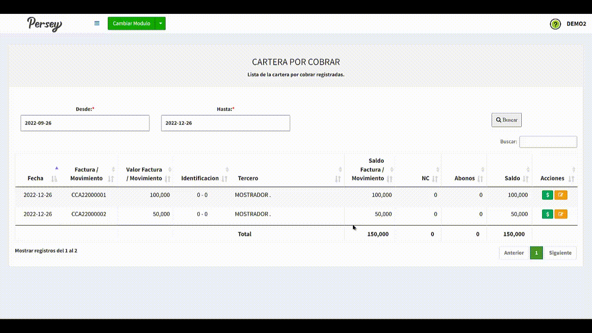
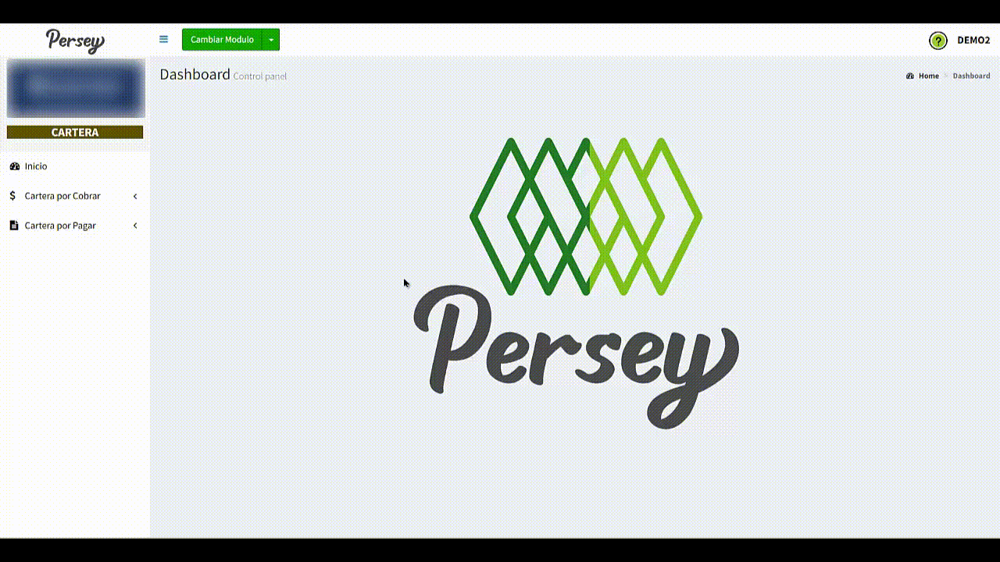

Primeros pasos#
En el menú lateral izquierdo va a encontrar todas las opciones que usted va a poder realizar en el aplicativo de Persey.
Guia visual :


En el menú lateral izquierdo va a encontrar todas las opciones que usted va a poder realizar en el aplicativo de Persey.
Aquí podras guiarte paso a paso como crear un cobro de cartera, listar sus cobros y ver reportes
Dirijase en el menú a la opcion de Cartera por cobrar, luego la opcion Nuevo
Rellene los campos correspondientes, teniendo en cuenta que debe haber una caja en proceso y proceda a darle "Guardar". Para mas detalle vea el siguiente video

Si usted lo requiere, puede crear un tercero rapidamente de la siguiente manera

Dirijase en el menú a la opcion de Cartera por cobrar, luego la opcion Listar
Elija el periodo inicial hasta el periodo final que desea evaluar y proceda a darle "Buscar"

Cabe aclarar que usted tambien podrá editar o realizar recibos de caja como se muestra en el siguiente video
NOTA: Sí usted desea editar un cobro de cartera, este no puede estar ligado a un recibo de talonario POS o de factura electronica diferido a credito

Dirijase hacia la sección de "Cartera por Cobrar" y elija la opción de "Reportes por Periodo". elija las fechas sobre las cuales quiere usted ver el reporte y posterior a ello oprima en "Ver"

Dirijase hacia la sección de "Cartera por Cobrar" y elija la opción de "Reportes por Deudores". elija las fechas sobre las cuales quiere usted ver el reporte y posterior a ello oprima en "Ver"
Dirijase hacia la sección de "Cartera por Cobrar" y elija la opción de "Reportes por Vendedor". elija las fechas sobre las cuales quiere usted ver el reporte y posterior a ello oprima en "Ver"

NOTA: Cabe aclarar que si usted desea visualizar cada una de las listas, lo puede hacer pulsando sobre el botón "PDF" en la ezquina superior derecha
Aquí podras guiarte paso a paso como crear un pago de cartera, listar sus pagos y ver reportes
Dirijase en el menú a la opcion de Cartera por pagar, luego la opcion Nuevo
Rellene los campos correspondientes, teniendo en cuenta que debe haber una caja en proceso y proceda a darle "Guardar". Para mas detalle vea el siguiente video

Si usted lo requiere, puede crear un tercero rapidamente de la siguiente manera
Dirijase en el menú a la opcion de Cartera por pagar, luego la opcion Listar
Elija el periodo inicial hasta el periodo final que desea evaluar y proceda a darle "Buscar"

Cabe aclarar que usted tambien podrá editar o realizar recibos de caja como se muestra en el siguiente video

NOTA: Sí usted desea editar un pago de cartera, este no puede estar ligado a una compra con proveedores diferida a cuotas

Dirijase hacia la sección de "Cartera por Pagar" y elija la opción de "Reportes por Periodo". elija las fechas sobre las cuales quiere usted ver el reporte y posterior a ello oprima en "Ver"

Dirijase hacia la sección de "Cartera por Pagar" y elija la opción de "Reportes por Acreedores". elija las fechas sobre las cuales quiere usted ver el reporte y posterior a ello oprima en "Ver"